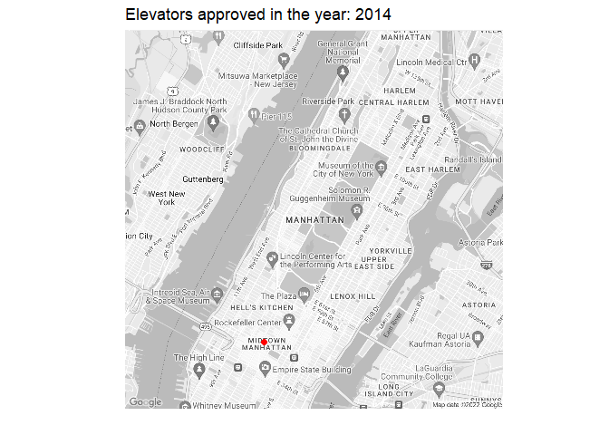

library(tidytuesdayR)
library(tidyverse)
library(gganimate)
library(lubridate)
library(dotenv)
library(ggmap) Tidy Tuesday - 2022 week 49 - Elevators
Libraries
Load data
tuesdata <- tidytuesdayR::tt_load('2022-12-06')
Downloading file 1 of 1: `elevators.csv`elevators <- tuesdata$elevatorsRead the google maps API key from local env file
For creating the map plots, I am using ggmap package (1). You can learn more about it here.
Google maps now requires an API key to be generated in order to access the map. The instructions to generate the API key can be found here.
I am using “dotenv” package to store my key secretly in a local env file and accessing it using the command below.
load_dot_env("ggmap.env")
ggmap_key = Sys.getenv('ggmapapi')
register_google(key = ggmap_key)Data cleaning and filtering function
The below function takes the cleaned elevator approval data as input and returns filtered data for the selected year to map later.
elevator_approval_filter_func <- function(data, yearinput) {
data_filtered <- data %>%
filter(!is.na(DV_APPROVAL_DATE)) %>%
mutate(date_approval = as_date((DV_APPROVAL_DATE))) %>%
select(date_approval, LONGITUDE, LATITUDE) %>%
filter(year(date_approval) == yearinput)
return(data_filtered)
}
# Test the function
elevator_approval_filter_func(elevators, 2014)# A tibble: 1,162 × 3
date_approval LONGITUDE LATITUDE
<date> <dbl> <dbl>
1 2014-10-03 -74.0 40.7
2 2014-05-28 -74.0 40.7
3 2014-10-09 -74.0 40.8
4 2014-06-06 -74.0 40.7
5 2014-05-05 -74.0 40.7
6 2014-04-08 -74.0 40.8
7 2014-05-07 -73.9 40.8
8 2014-01-17 -74.0 40.7
9 2014-10-29 -74.0 40.8
10 2014-01-18 -74.0 40.8
# … with 1,152 more rowsClean data for plotting on map
The below function takes the filtered elevator data, and cleans it to be ready to plot on the map. Since we want to create a map plot that reveals location over time, we will create cumulative elevator approved location for every year.
format_data_for_mapping <- function(data) {
data_format <- data %>%
group_by(date_approval) %>%
summarise(lat=as.numeric(LATITUDE[1]),
long=as.numeric(LONGITUDE[1]),
n.elevators=n()) %>%
ungroup() %>%
distinct() %>%
arrange(date_approval) %>%
split(.$date_approval) %>%
accumulate(~bind_rows(.x, .y)) %>%
bind_rows(.id = "frame") %>%
group_by(frame) %>%
mutate(frame= as_date(frame))
return(data_format)
}Plot animated map function
plot_map_animated_func <- function(data, yearinput) {
## get map and plot station locations
newyork.map <- get_map(location= 'Manhattan, New York',
maptype='roadmap', color='bw',source='google',zoom=13)
mapplot <- ggmap(newyork.map) +
geom_point(data=data, aes(x=long,y=lat), color='red',size=2)+
theme(axis.ticks = element_blank(), axis.text = element_blank())+
xlab('')+ylab('') +labs(
title = paste0("Elevators approved in the year: ", yearinput)
)
map_animated <- mapplot +
transition_states(frame) +
ease_aes('linear')
return(map_animated)
}Plot the animation by year
Select a year, and plot the animation calling the functions created above.
yearselect<- 2014
map_anim <- elevator_approval_filter_func(elevators, yearinput = yearselect) %>% format_data_for_mapping() %>%
plot_map_animated_func(yearselect)
animate(map_anim, duration =10)
Save the animation
anim_save(file = "elevators_approved_map_2014.gif")References
1.
D. Kahle, H. Wickham, Ggmap: Spatial visualization with ggplot2. The R Journal 5, 144–161 (2013).